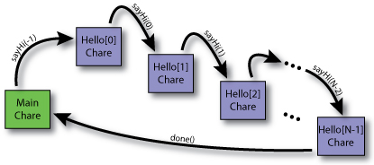

Before diving into the next version of the "Hello World" program, we must first introduce a few Charm++ concepts: chare arrays and readonly variables.
It would be cumbersome to have to create many chare objects one by one (especially if a program needs to create several instances of the same chare class). Because of this, the concept of a chare array was introduced to Charm++. As the name implies, a chare array is simply an array of chare objects. The big difference between an array of chare objects and any other array is that not all of the chare objects in the array have to be located on the same processing element. By default, the elements of a chare array are assigned to the processing elements in a round-robin order (the programmer can specify which processing element each chare object in the chare array is created on, however, for this example, the default placement will be used). That is, each processing element is given one chare array element until all processing elements have one element. Then, if there are more chare objects in the chare array, each processing element gets a second chare object. This process continues until all of the chare objects in the chare array have been assigned to processing elements. While this program uses a 1D chare array, please note that it is also possible to create multi-dimensional chare arrays.
There are two special variables that can be used by elements in a chare array: thisProxy and thisIndex. Both of these variables are similar to the this keyword in C++. The thisProxy variable points to the array that this chare object is in. The thisIndex variable holds the index in the chare array that this chare object occupies (i.e. the first element is at index 0, the second at index 1, and so on).
Readonly variables are special global variables that can be accessed from any chare object in the global object space. As should be clear by now, a Charm++ program begins with the constructor of the main chare object (Main::Main() in this example). When the main chare's constructor executes, it should set the values for all of the readonly variables in the program. Once the main chare's constructor has completed, the values contained in the readonly variables are distributed to all of the other processing elements available to the application. At this point, the values of the readonly variables should only be read since all of the processing elements have a private copy of the values (i.e. changing the value of a readonly on one processing element will not effect the value of the same readonly on another processing element).
For the purpose of this example program, readonly variables serve two purposes. The first is to place a reference to the Main chare object into the global object space so that all of the Hello chare objects can invoke entry methods on it. While all of the chare objects in the global object space can invoke entry methods on one another, they first need a reference (called a Proxy) to the target chare object. The second purpose is to contain global constants. In this case, the number of Hello chare objects, which can be specified on the command-line by the user, is contained in the numElements readonly variable.
|  |
| Figure 1: Control Flow of the Array "Hello World" Program |
There are two chare classes in this version of the "Hello World" program (aka. the Array "Hello World" program). The source code for the chare classes and their entry methods is located below.
The first chare class is the Main chare class. This class will be the main chare of the application. It serves three purposes. First, it will create the other chare objects in the application.. Second, it will initiate the computation. Third, it will call CkExit() when the calculation is finished to cause the program to exit. There will only be a single Main chare object (which is created by the Charm++ Runtime System).
The second chare class is the Hello chare class. The Main chare object will create an array of Hello chare object of length N. Each of the Hello objects will print "Hello World" one by one starting with the Hello chare object at index 0, then the Hello chare object at index 1, and so on. Once the last Hello chare object in the array has printed "Hello World," it will then send a message to the Main chare object indicating that the computation has completed (at which point, the Main chare object will call CkExit()).
There are four entry methods in this application (ignoring the migration constructors for each chare class; two constructors, Main::Main(...) and Hello::Hello(...), and two standard member functions, Hello::sayHi(...) and Main::done(...)). The constructor of the Main chare class is the entry point of the application. The constructor for the Hello chare class does nothing. Normally, this is where the local state of the chare object (member variables, etc.) would be initialized, however, the Hello chare objects do not have any local state. The Hello chare class' sayHi() entry method will print out the "Hello World" message for the current Hello chare object and then send a message to the next Hello chare object (or, in the case of the last Hello chare object in the array, call the done() entry method on the Main chare). The done() entry method for the Main chare class simply calls the CkExit() function which terminates the Charm++ program.
This example is just meant to demonstrate how a Charm++ program operates (how forward progression is made, how chare objects communicate by invoking entry methods, and so on). This program, while it could be executed on multiple processing elements with the chare objects spread out across the processing elements, does not have any inherent parallelism in it. The next "Hello World" program (the Broadcast "Hello World" Program) will actually exhibit parallelism.
The source code for this example can be found here (ArrayHelloWorld.tar.gz).
|
| Source File (hello.C) |
#include "hello.decl.h"
#include "hello.h"
#include "main.decl.h"
extern /* readonly */ CProxy_Main mainProxy;
extern /* readonly */ int numElements;
Hello::Hello() {
// Nothing to do when the Hello chare object is created.
// This is where member variables would be initialized
// just like in a C++ class constructor.
}
// Constructor needed for chare object migration (ignore for now)
// NOTE: This constructor does not need to appear in the ".ci" file
Hello::Hello(CkMigrateMessage *msg) { }
void Hello ::sayHi(int from) {
// Have this chare object say hello to the user.
CkPrintf("\"Hello\" from Hello chare # %d on "
"processor %d (told by %d).\n",
thisIndex, CkMyPe(), from);
// Tell the next chare object in this array of chare objects
// to also say hello. If this is the last chare object in
// the array of chare objects, then tell the main chare
// object to exit the program.
if (thisIndex < (numElements - 1))
thisProxy[thisIndex + 1].sayHi(thisIndex);
else
mainProxy.done();
}
#include "hello.def.h"
|
|
| Source File (main.C) |
#include "main.decl.h"
#include "main.h"
#include "hello.decl.h"
/* readonly */ CProxy_Main mainProxy;
/* readonly */ int numElements;
// Entry point of Charm++ application
Main::Main(CkArgMsg* msg) {
numElements = 5; // Default numElements to 5
// There should be 0 or 1 command line arguements.
// If there is one, it is the number of "Hello"
// chares that should be created.
if (msg->argc > 1)
numElements = atoi(msg->argv[1]);
// We are done with msg so delete it.
delete msg;
// Display some info about this execution
// for the user.
CkPrintf("Running \"Hello World\" with %d elements "
"using %d processors.\n",
numElements, CkNumPes());
// Set the mainProxy readonly to point to a
// proxy for the Main chare object (this
// chare object).
mainProxy = thisProxy;
// Create the array of Hello chare objects. NOTE: The
// 'helloArray' object that is returned by 'ckNew()' is
// actually a Proxy object to the array.
CProxy_Hello helloArray = CProxy_Hello::ckNew(numElements);
// Invoke the "sayHi()" entry method on the first
// element of the helloArray array of chare objects.
helloArray[0].sayHi(-1);
}
// Constructor needed for chare object migration (ignore for now)
// NOTE: This constructor does not need to appear in the ".ci" file
Main::Main(CkMigrateMessage* msg) { }
// When called, the "done()" entry method will cause the program
// to exit.
void Main::done() {
CkExit();
}
#include "main.def.h"
|
For the most part, the Makefile is the same as the Basic "Hello World" program. The only difference is there are now two chare classes that need to be compiled (the additional rules and dependencies related to the Hello chare class).
| Makefile |
CHARMDIR = [put Charm++ install directory here]
CHARMC = $(CHARMDIR)/bin/charmc $(OPTS)
default: all
all: hello
hello : main.o hello.o
$(CHARMC) -language charm++ -o hello main.o hello.o
main.o : main.C main.h main.decl.h main.def.h hello.decl.h
$(CHARMC) -o main.o main.C
main.decl.h main.def.h : main.ci
$(CHARMC) main.ci
hello.o : hello.C hello.h hello.decl.h hello.def.h main.decl.h
$(CHARMC) -o hello.o hello.C
hello.decl.h hello.def.h : hello.ci
$(CHARMC) hello.ci
clean:
rm -f main.decl.h main.def.h main.o
rm -f hello.decl.h hello.def.h hello.o
rm -f hello charmrun
|
The output of the Array "Hello World" program is below. Because there are multiple chare objects in this program, the chare objects can be spread out over the various processing elements in use. For these runs, three processing elements (x86 workstations running linux) were used. The specific command used was ./charmrun +p3 ./hello 10. The charmrun program is used to launch the application on all the hosts. The +p3 indicates that three processing elements should be used (the first three hosts in the nodelist file). The ./hello indicates the Charm++ program that should be executed. Everything following the ./hello is passed to the Charm++ program as command-line arguments.
$ ./charmrun +p3 ./hello 10
|
$ ./charmrun +p3 ./hello 10
|
| Output for Run 1 | Output for Run 2 |
| Figure 2: Output of the Array "Hello World" Program | |
The output above may seem a bit confusing at first. The output from Run 1 is probably what one would expect, that is, until the last two lines are read. With just a quick glance, it seems that the helloArray[9].sayHi() entry method was called before the helloArray[8].sayHi() entry method. However, with closer inspection, one will notice that the "told by" portion of the lines indicates that they were indeed executed in the correct order. So, why are the lines out of order? Also notice that those chare objects were located on different processing elements. Even though helloArray[8].sayHi() was executed before helloArray[9].sayHi(), it's output still needs to be packed into a message and passed back to a single location where the output is collected and presented to the user as a single stream of output. The output of helloArray[9].sayHi(), while it was sent later, was received earlier. The output of Run 2 is an even more extreme version of what can happen. Even though the program is executing as expected, there is a race condition in the process of the output being serialized since the processors do not synchronize with one another for the sake of printing output.
This interleaving of tasks is a common issue in parallel programming in general and something that makes writing a parallel program more difficult than writing a serial program. By their very nature, parallel programs have multiple processing elements acting independently of one another. When two or more processing elements have to perform a set of tasks in a particular order (i.e. task A must complete on processing element X before task B can begin on processing element Y) the processing elements must synchronize. With little synchronization, the processing elements are, for the most part, acting independently from one another (i.e. the processing elements are free to do local computation without having to communicate with other processing elements). Adding more synchronization will help keep the processing elements performing tasks in a specified order, however, this also tends to introduce more overhead and will likely decrease concurrency which hurts overall performance. In this example program, the tasks that can change order are the printing of output statements, however, in many parallel applications, the various subtasks in the computation itself are usually free to execute in any order per the dependencies in the calculation.
{kind=link}